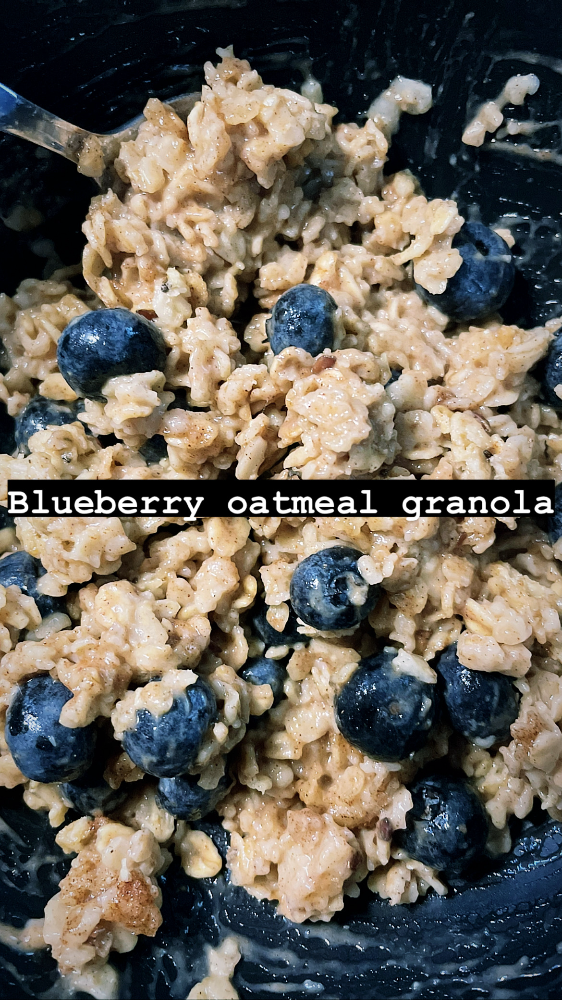

Cooking Inspirations
Recipes

Ingredients
1 instant pack of Oatmeal
1/2 cup of Granola
1/2 Cup of Blueberries
2 tsp of cinnamon
Directions
STEP 1: Follow the instructions for the oatmeal
STEP 2: Once the oatmeal is done put the 1/2 cup of granola in the oatmeal
STEP 3: Place the blueberries
STEP 4: Sprinkle cinnamon
STEP 5: Enjoy as is or stir
1 instant pack of Oatmeal
1/2 cup of Granola
1/2 Cup of Blueberries
2 tsp of cinnamon
Directions
STEP 1: Follow the instructions for the oatmeal
STEP 2: Once the oatmeal is done put the 1/2 cup of granola in the oatmeal
STEP 3: Place the blueberries
STEP 4: Sprinkle cinnamon
STEP 5: Enjoy as is or stir